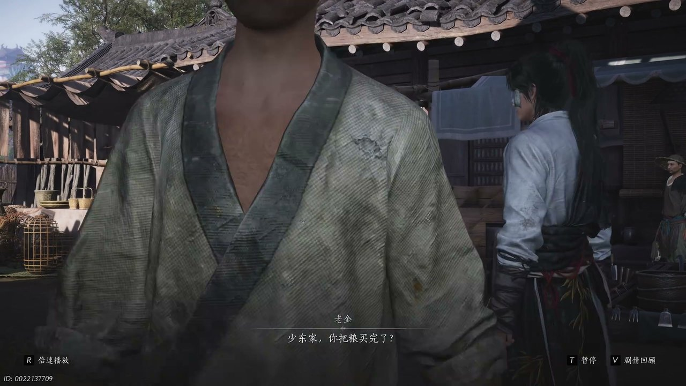

燕云背后的故事：第4集 第四集 开封

朋友们，上一集咱们说到神仙渡惨遭覆灭、家园焚毁、亲友离散，所有人都以为年少的少东家早已葬身火海。新来的朋友可能纳闷，好好一处安稳村落，为何会突然遭遇灭顶灾祸。简单说，乱世江湖暗流涌动，绣金楼暗中布局围剿，世外桃源一夜沦为荒芜白地。可他哪知道，自己侥幸存活，就等于踏入了步步杀机的江湖棋局。这不，孤身无依的少年，背着仅存的念想，一路辗转来到了繁华却险恶的汴梁开封。

漫天灰烬缓缓飘散在神仙渡满目疮痍的残垣断壁之上，曾经温暖安宁、满是烟火气息的家乡，一夜之间彻底化为死寂荒芜的白地。少东家痛失至亲与朝夕相伴的亲友，葬送了无忧无虑的年少时光，往后温暖安稳的过往尽数消散，身后所有退路都被无情斩断。脚下土地遍布灼烧焦痕，凛冽寒风裹挟着刺鼻烟火气掠过脸庞，他紧紧攥着颈间江叔留下的镇冠珏玉佩，满心酸楚与悲痛难以言说。孤寂落寞的背影在废墟中格外单薄，看得人心头酸涩不已。船家望着满目破败的村落连声叹息，如实告知此地惨遭歹人恶意纵火毁坏，无数乡亲流离失所、无家可归。少东家强忍满心悲愤与不甘，暗自立下追查灾祸真相的决心，毅然踏上渡船奔赴陌生开封，从此孤身闯荡凶险莫测、步步惊心的江湖。

渡船缓缓靠岸停泊，少东家踩着青石石阶踏入开封城门，繁华喧嚣的汴梁市井烟火扑面而来。可船家先前叮嘱城内人心狡诈、处处陷阱的话语，始终萦绕在他心头难以忘怀。这座外表繁华鼎盛、歌舞升平的都城，内里藏满算计纷争，人情淡薄、人心险恶。入城要道各处商贩借着樊楼群英会的名头肆意哄抬物价，车马食宿价格暴涨至平日三倍，蛮横拉扯来往路人强行消费牟利。街边各色摊贩密密麻麻，所有人都想借着这场盛会投机牟利、大发横财，整座城市都弥漫着浮躁功利的气息。少东家淡然回绝所有强行招揽，静静观察城中乱象，漫步在古朴青石板路上，鼻尖交织着酒香、饭香与市井浊气，真切明白江湖远不及故土安稳，往后行走四方，必须时刻警醒小心，提防无处不在的圈套与暗算。

开封热闹繁华的集市上人来人往、络绎不绝，不少黑心骗子借着未央城东阙公子温无缺的名号招摇撞骗，摆摊售卖虚假聚宝盆，谎称宝物可以以少换多、快速暴富敛财，肆意骗取普通百姓辛苦积攒的钱财。少东家驻足一旁细心观察片刻，凭借自身精湛的听风辨位武学功底，隔着厚重瓷盆就察觉器物内部暗藏机关破绽，当众条理清晰地拆穿这场荒唐骗局。围观百姓恍然大悟，行骗之人颜面扫地、狼狈不堪。谁知这群骗子早有同伙埋伏接应，立刻聚拢人群围堵刁难少年。危急关头，未央城四大掌柜之一的莹莹女侠及时现身，身姿凛然气场十足，三言两语便震慑喝退一众闹事歹人，及时救下身陷险境、孤立无援的少东家。

莹莹女侠性格爽朗直率、待人亲和，主动邀请少东家前往街边麦香面馆用餐闲谈，店内温暖氤氲的面香萦绕四周，瞬间驱散了少年一路长途奔波积攒的疲惫与寒意。二人轻声交谈间，开封全城严峻棘手的钱荒困境逐渐清晰，大宋官方流通铜钱严重匮乏稀缺，江南唐国劣质铁钱大肆泛滥，朝廷明令禁止唐钱使用，寻常百姓日常交易受阻，家家户户生计艰难窘迫。坊间流言四起，人人都在议论温无缺即将在樊楼举办盛大群英会，传闻会拿出生津散化解全城钱荒难题。少东家坦诚道出前来开封追查过往恩怨、探寻隐秘线索的目的，小心守护怀中家传离人泪老酒，坦言这是仅剩的亲友念想，无论遭遇何种困境，都绝不会轻易开坛，眼眸里满是珍重与不舍。

二人安心用餐闲聊之际，莹莹女侠忽然捂住腹部面露痛苦神色，神色匆忙借口去往别处方便，随即匆匆离席，之后再也没有返回座位，只在桌面留下一枚神秘锦囊。少东家愣在原地许久才反应过来，自己一路奔波未曾随身携带银两，根本无力支付一餐饭钱，处境窘迫又尴尬。面馆小二性情温和通情达理，贴心提议让他抵押随身珍贵的家传老酒抵扣餐费，同时愿意借出银两作为后续赶路周转盘缠。走投无路万般无奈之下，少东家只能忍痛押下珍藏多年的离人泪老酒，拆开锦囊查看内部线索，里面详细标注着粮食倒卖交易地点，一场精心布置、暗藏无尽凶险的江湖圈套，自此悄然缠上孤身前行的少年。

少东家严格依照锦囊标注的线索，在麦香粮店周边街巷四处收购大批粮食，打算靠着粮食倒卖赚取旅途所需路费，却意外重逢曾经行骗作恶的老金。此人阴险狡诈、心思歹毒，手握少东家幸存于神仙渡灾祸的秘密，以此作为要挟筹码，强硬索要粮食交易一成利润分成。少年孤身漂泊无依、无人相助，万般无奈只能被迫答应对方无理要求。随后两人一同对接道主手下符掌柜，顺利完成粮食交易交割，拿到一袋钱币时满心欣喜。仔细清点查验后才惊慌醒悟，所有钱财全是朝廷明令禁止流通的唐国铁钱，毫无实际用处。层层嵌套、环环相扣的精密连环骗局，初入江湖之人根本难以防备，少东家刚踏入开封地界，就惨遭势力算计，蒙受巨大损失。

上当受骗怒火难平的少东家立刻四处追查骗局幕后缘由，态度强硬地逼迫负责跑腿传话的少女交代幕后主使，绝不放过任何一丝有用的追查线索。与此同时，他从面馆小二口中得知关键消息，自己此前抵押出去的珍贵家传老酒，早已被气质精致、满身馥郁香气的樊楼醉花阴派系之人高价买走。醉花阴始终依附樊楼势力行事，所有零散追查线索瞬间全部收拢，直指樊楼群英会。少东家不再犹豫迟疑，当即勒令老金陪同带路，一行人即刻赶往繁华热闹的樊楼，既要找回心心念念的家传离人泪老酒，也要揪出暗中布局算计自己的幕后之人，彻底查清尘封多年的江湖恩怨与隐秘阴谋。

没过多久一行人便顺利抵达樊楼外围，整座高楼灯火璀璨、彻夜通明，人声喧闹络绎不绝，盛大隆重的群英会正在楼内火热开展。一箱箱金银金饼、精致可口珍馐、陈年上等佳酿源源不断送入楼中，往来宾客形形色色，江湖侠客、市井商贩、各方势力要人混杂齐聚。樊楼内外层层重兵戒备森严，四处暗藏监视眼线，各大派系势力交错盘踞，表面热闹祥和一片，暗地里各方矛盾交织，汹涌暗流不断涌动。风声掠过楼阁回廊，隐约传来争执交锋声响，所有人都奔赴此地争夺机缘与利益。少东家静静伫立楼下仰望巍峨樊楼，心中无比清醒，只要踏入这座楼阁，便再也无法置身事外，终将深陷汴梁多方势力纠缠交错的复杂江湖棋局之中。
这一集看下来，我最大的感受就是乱世江湖步步凶险，孤身闯荡人间处处都是隐藏陷阱。上一集我们只知道神仙渡覆灭、少东家侥幸存活，到了这一集，又多出莹莹女侠现身、开封钱荒谜团、家传老酒被押、唐粮连环骗局好几条全新剧情线索。莹莹为何故意留局不辞而别？樊楼群英会到底藏着怎样阴谋？醉花阴为何偏偏觊觎他家传老酒？所有细碎剧情线索不断收拢汇合，全部牢牢指向繁华樊楼，无依无靠的少东家已然深陷各方势力博弈，再也无法轻易脱身。下一集樊楼之内，各方高手正面交锋，必定掀起一场惊天风波。大家不妨聊聊，莹莹到底是好心相助还是另有图谋，老酒背后又藏着什么隐秘往事，喜欢开封江湖剧情别忘了点赞关注，下期继续深挖樊楼不为人知的秘密。
关于我们
📱 公众号名称：三天游戏
✍️ 作者：曾三天
扫码关注公众号，获取每日最新资讯

商务合作与版权
商务合作 / 内容投稿 / 品牌推广
请关注公众号「三天游戏」后台留言联系
版权声明：本文由作者整理，转载需注明出处。